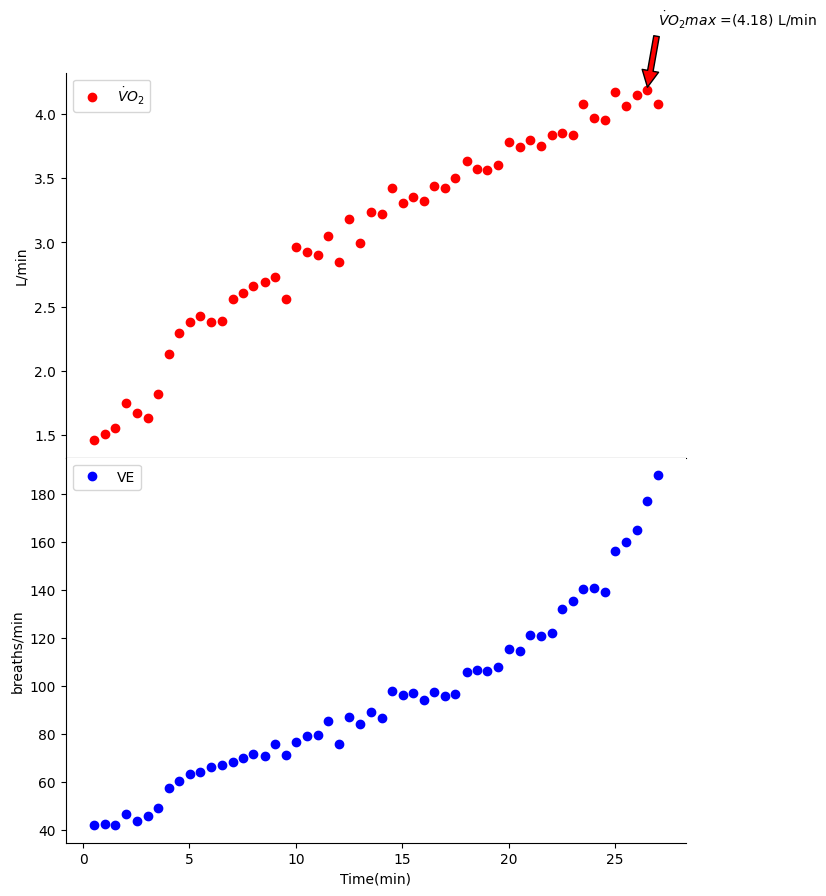
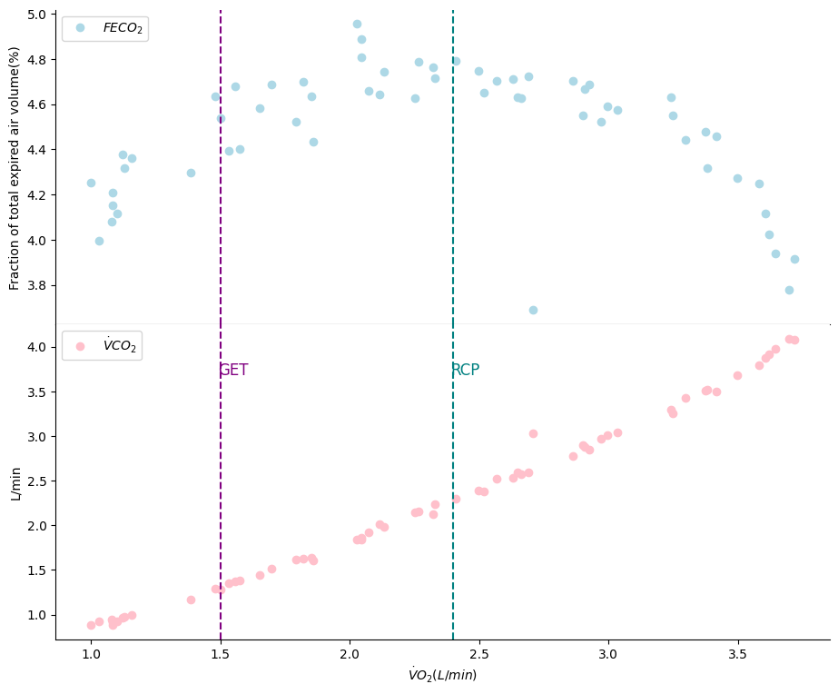

VO₂ (oxygen consumption) data
In this project for KNES 381, I analyzed VO₂ (oxygen consumption) data using Python, with a focus on creating dynamic and interpretable visualizations of key physiological variables. Building upon a foundational script provided during class, I adapted the code to work with a new VO₂ dataset. This showcased the power of modular, reusable scripting by requiring only minimal code changes to analyze different datasets.
One of my main contributions was developing dual visualizations of FECO₂ (fraction of expired CO₂) and VCO₂ (volume of expired CO₂) plotted over VO₂. These were displayed as two subplots sharing the same x-axis, allowing for a clear comparative view of the respiratory parameters. I used Matplotlib to create clean, publication-style plots that emphasized clarity and physiological relevance.
To go beyond the basic requirements I implemented advanced functionality by programmatically identifying and plotting threshold indicators for the Gas Exchange Threshold (GET) and the Respiratory Compensation Point (RCP). These markers, similar to the ones demonstrated in the final slide of the course’s Python tools presentation, were calculated and visualized directly within the script.
As part of the assignment submission, I integrated my final Jupyter Notebook with GitHub and Kaggle. This allowed for an interactive and transparent presentation of my code and results. The notebook contains a finalized package that incorporates all previously developed components into a cohesive analysis pipeline. Thanks to the structure of the script, swapping in a new dataset is as simple as changing the file path, enabling automatic analysis and plot generation — an example of efficient, scalable code design.
Below I'll show some photos of the graphs!
Graph 1
Graph 2
This is some of my code
Through this project, I strengthened my ability to work with real physiological data using Python. I learned how to read, process, and visualize VO₂ data in a way that was both informative and visually clear. This helped me better understand how coding can support research and analysis in kinesiology.
I also deepened my knowledge of exercise physiology by implementing threshold indicators like the Gas Exchange Threshold (GET) and Respiratory Compensation Point (RCP). Plotting these required not only technical coding skills but also a strong grasp of the physiological concepts behind them.
Lastly, I saw firsthand the importance of writing clean, modular code. By creating a script that could be reused across different datasets with just a file path change, I developed a valuable skill in scalable programming. This project gave me a better appreciation for how thoughtful design and organization can make a big difference in both efficiency and usability.